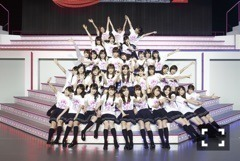
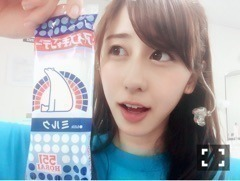
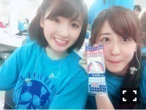
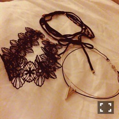

| 2016/07 23 Sat | 斎藤ちはる いいスタートを。そしてアンダーライブ決定！(´>∀<｀)ゝ |
ちはるーむへようこそ(﹡ˆ ˆ﹡)

みんなで撮った集合写真♪
手開いて〜！って言われて
撮った時だから、みんなで
わ〜ってしてます！
今日は真夏の全国ツアー
ラストの大阪城ホールでした！！
私的には凄い楽しかった。
大阪城ホール、
15thになって初めてのツアー
いいスタート切れたと思います！
来てくれた皆さん！
応援してくれている皆さん！
ありがとうございます\( ˆoˆ )/
-------------------------♡
今日のコーナーで、
花奈、さゆ、純奈、絢音ちゃんと
アイス早食い対決があったのですが
私、見事1位でした！！\( ˆoˆ )/
口の中凍るかと思った\( ˆoˆ )/
551のアイスキャンディが
美味しかった...♡

アイスキャンディー♪
本番ではグリーンティーを食べたんだけど
本番終わった後には
ミルクを食しました(﹡ˆ ˆ﹡)

最下位になったさゆと。。
さゆはのんびりさんだから
今日のコーナーは大変だったろうけど
頑張ってた( ;o; )♡
-------------------------♡
そしてそして、
今日のライブ中に、
アンダーライブ中国地方シリーズが
発表されましたー！！！！
15thシングルのアンダーメンバーで
中国地方を回ります♪
9月22日 広島
9月23日 岡山
9月24日 山口
日程はこの様になっているので、
行けそうな皆さんは
是非是非予定空けておいてね( ◦˙ ˙◦ )
楽しみだな〜♡
アンダーライブ楽しみ♡
写真は全然関係ないけど、
浴衣の時の髪飾りが好き。
-------------------------♡
本日の #chihacode

今日は大阪に持ってきていた
チョーカーを紹介します(﹡ˆ ˆ﹡)
上: Lily Brown
左: EAT ME
右: DAMMY
同じ黒のTシャツに
どのチョーカーも合うんだけど
付けるチョーカーによって
全然雰囲気が変わるんだ♡
上のは
付けたら少しセクシーに見えるし
左のは
ラブリーでお人形さんぽく見えて
右のは
クールでカッコよく見える！
-------------------------♡
♬ ChihaMusic
「アルエ」 BUMP OF CHICKENさん
どんな時でも、いつ聞いても
元気になれるし、
背中を教えくれる気がする。
歌詞が好きで、
とっても優しい気持ちになれる。
いま、お腹すいてきた...
イカ焼き、たこ焼き、ねぎ焼き...
食べたい...
空腹に悶えながら寝ます。
おやすみ！
斎藤ちはる